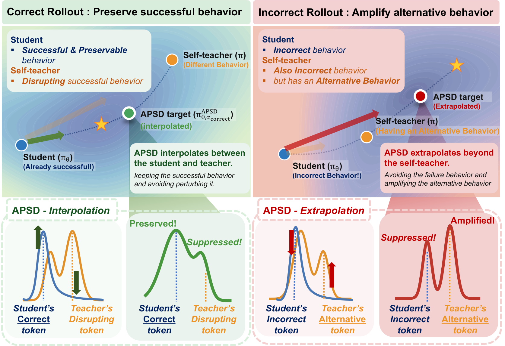
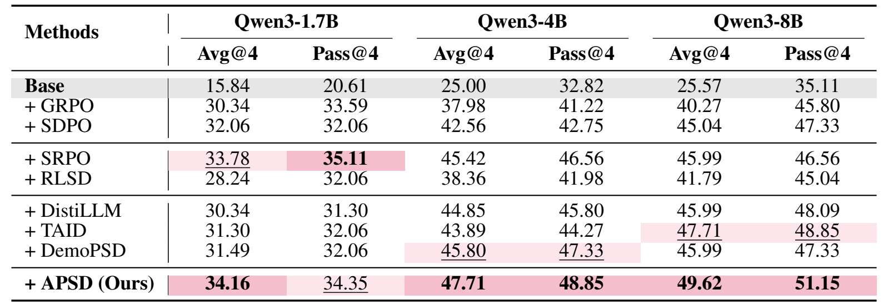

Abstract
Self-distillation policy optimization provides dense token-level supervision for LLM posttraining through feedback-conditioned self-teachers. However, directly matching the self-teacher can disrupt successful behaviors on correct rollouts while providing insufficient correction on incorrect ones. We propose Asymmetric Policy Optimization via Self-Distillation (APSD), which constructs correctness-dependent targets by mixing student and self-teacher distributions: interpolation preserves successful behaviors on correct rollouts, while extrapolation beyond the self-teacher strengthens correction on incorrect ones. We analyze APSD through divergence decomposition, reverse-KL barycentric geometry, and gradient analysis, highlighting the importance of gradient flow through student-dependent targets. Experiments under reinforcement learning with verifiable rewards and rich feedback show that APSD achieves strong overall performance against reinforcement-learning and self-distillation baselines and matches SDPO performance with 2.6× fewer training steps on average across Qwen3 model scales.

APSD interpolates to preserve correct behavior and extrapolates to strengthen correction on incorrect behavior.
APSD adapts the self-distillation target to rollout correctness: preserve successful behavior and push more strongly away from failed behavior.
Why Does One Target Fail?
Self-distillation turns feedback into token-level supervision by asking the current policy to learn from a feedback-conditioned version of itself. But using that self-teacher as the same target for every rollout overlooks a crucial distinction: whether the student's behavior succeeded.
In the correct example below, the student assigns 99.94% probability to the correct token, while the self-teacher shifts its preference toward an incorrect alternative. Matching the teacher directly could overwrite behavior that already works.

Teacher-student discrepancy in SDPO. Direct matching can perturb a correct preference, while the teacher can retain the student's incorrect preference.
The incorrect example shows the opposite failure: both student and self-teacher strongly prefer the same incorrect token (about 100% and 98.62%, respectively). Matching the teacher as-is may not move the student far enough toward a correct alternative.
How APSD Works

Overview of APSD: sample rollouts, construct an asymmetric target based on correctness, and optimize token-level self-distillation.
Let πθ be the student and π its feedback-conditioned self-teacher. APSD reweights the student distribution using the teacher-to-student probability ratio:
For correct rollouts, 0 < α < 1 yields interpolation. For incorrect rollouts, α > 1 yields extrapolation beyond the self-teacher. The paper characterizes this objective through three propositions.
Proposition 1: α balances reverse-KL and Rényi divergences
The APSD loss decomposes into the SDPO reverse-KL term and an additional Rényi-divergence term:
This second term changes sign with α around 1. For correct rollouts, its contribution counteracts excessive movement toward the teacher; for incorrect rollouts, it emphasizes alternatives favored by the teacher.
Proposition 2: α determines the target's position in reverse-KL geometry
The APSD target is a generalized reverse-KL barycenter of the student and self-teacher:
When the policies differ, the target's KL distance from the student grows monotonically with α. Thus 0 < α < 1 keeps the target between student and teacher, whereas α > 1 moves it beyond the teacher.
Proposition 3: detaching the target collapses APSD to a scaled SDPO update
If the entire student-dependent target is detached during differentiation, the resulting gradient is only a rescaled SDPO gradient:
Full target detachment discards the additional coupling term. APSD therefore retains gradient flow through the target so that α can shape the update direction, not merely its magnitude.
Results Across Feedback Settings
We evaluate APSD with scalar verifiable rewards (RLVR) and rich textual feedback (RLRF). The paper reports RLVR results on scientific reasoning and tool-use benchmarks, and RLRF results on LiveCodeBench v6 across three Qwen3 model scales.

RLVR performance on five benchmarks; the final column reports average accuracy.

RLRF performance on LiveCodeBench v6. APSD achieves the strongest overall results across the three Qwen3 scales.
BibTeX
@misc{yoon2026correctnessdependentasymmetrictargetdistributions,
title={Correctness-Dependent Asymmetric Target Distributions for Self-Distillation Policy Optimization},
author={Suwan Yoon and Seongryong Jung and Changhee Lee},
year={2026},
eprint={2610.25973},
archivePrefix={arXiv},
primaryClass={cs.LG},
url={https://arxiv.org/abs/2610.25973}
}